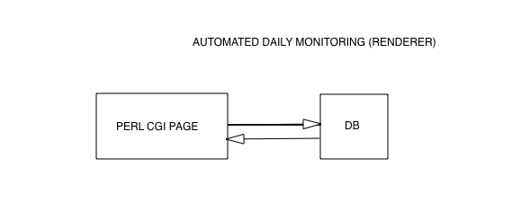
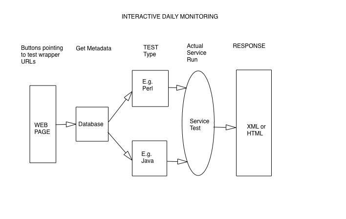

| Vaomonitor (Documentation) | ||||||
|
||||||
Hosted by:
HEASARC
|
|
|
Hosted by: HEASARC | ||||||||||||
The Vaomonitor system consists of three parts:
A.An automated testing System
-This system tests each service daily and stores the results in a local MySQL database.
B.An interactive Testing System
-There is a page that allows users to perform real time tests on individual services
-A capability exists to support multiple tests for a given service.
C. The Vaomonitor Page
This page contains the latest vao service test results. In addition, this page
provides information on external (non-vao services) that are currently failing and the last time
services were harvested from other regsitries. Complete documentation for this page can be found
here
The following diagrams illustrate the behavior of the
system. Arrows indicate the order in which scripts and tests are executed at runtime.
A. HOURLY AUTOMATED MONITORING
Java is used to drive the hourly tests. The code extracts
test metadata from the MYSQL database and builds a Perl test query. This Perl wrapper
in turn runs either a Perl or Java test on a service. Tests are either general (aliveness checks)
or unique tests that require their own specialized code and require unique Perl Responses,which are in XML format are
parsed and all metadata is stored in the db.

A vaomonitor home page is provided to users showing the latest status of each
service. This is a cgi script that extracts and processes test results
and displays them.

B.Interactive Monitoring
The interactive web page for testing services in real time will provide
buttons for each test that will allow users to:
1.Choose a particular test to run on a given service via drop down boxes.
2.Choose whether the response should be the service response, or a wrapped
pass/fail response.
3.Responses to pass/fail checks are handled by AJAX and will appear in a popup.

The Vaomonitor will store the monitoring results in a MySQL database. The database
will consist of the following 5 tables:
-A Services table:
-A Testhistory table:
-A Tests table
-An Error log table
-A table containing error types
The specifics of each table, including column parameters, primary keys,
and table relationships can
be found here
The Vaomonitor also uses the VAO Operations db when displaying notices. Information on this table
can be found here